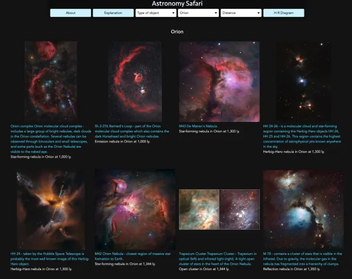
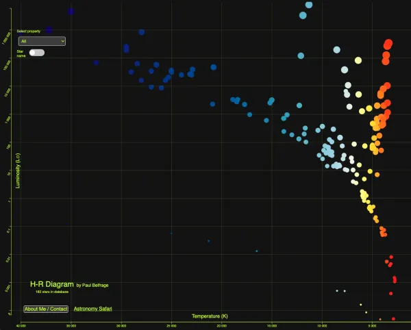
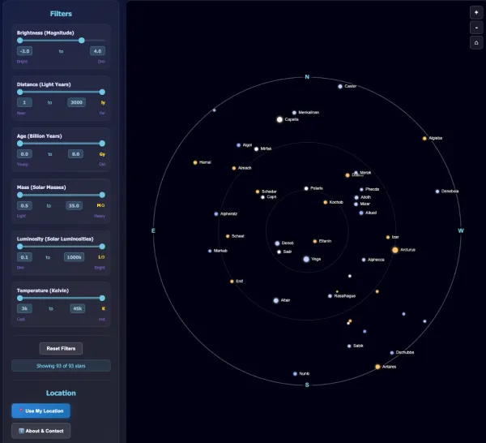
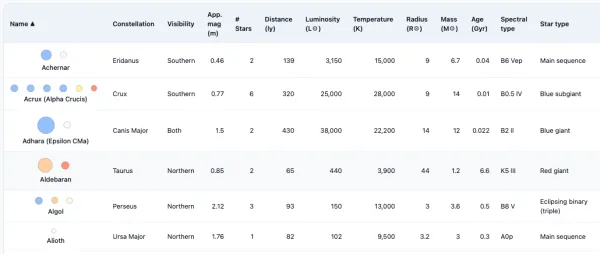
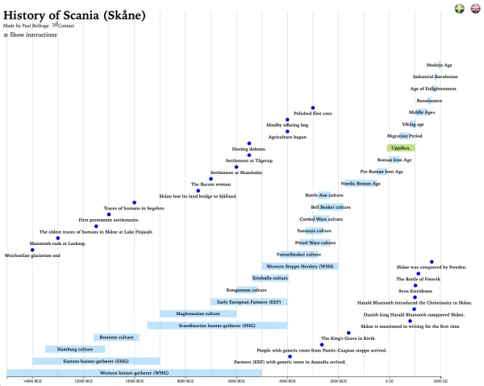

Astronomy Safari

Discover nebulae, galaxies and other deep-sky objects with curated images and easy filters. Built with HTML, CSS and JavaScript.
Visit
·Bachelor's Degree in Computer Science
·Master's Degree in Education
·Web Developer
·Teacher
20 years of experience in Computer Science and teaching.
Right now I'm working on projects that explore astronomy, data visualization and interactive timelines. Below are a few highlights — click any card to open the project in a new tab.

Discover nebulae, galaxies and other deep-sky objects with curated images and easy filters. Built with HTML, CSS and JavaScript.
Visit
An interactive Hertzsprung–Russell diagram made with D3.js. Filter stars by type, magnitude, mass and more.
Visit
Location-based starmap that uses your GPS for a personal view of the sky and powerful filtering options.
Visit
Interactive catalogue of 50 bright stars with sortable columns and quick filters for brightness and location.
Visit
A detailed interactive timeline dedicated to the history of Scania (Skåne), Swedens southmost, with zoom and pan controls.
VisitTeaching Game Development in Unity and C#, Web Development in HTML and CSS and Computer Networks.